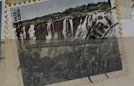
| SOURCE | TITLE| IMAGE MATCH | click to source page |
| The Digital Philatelist | Zambia Philately: 1975 3rd Definitive Issue – 5n Knife Edge Bridge (Victoria Falls – Mosi-Oa-Tunya) – The Digital Philatelist | 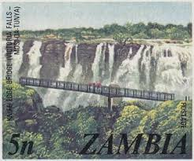 |
| iStock | Zambia Victoria Falls Postage Stamp Stock Photo - Download Image Now - Africa, Postage Stamp, Mosi-Oa-Tunya Waterfall - iStock | 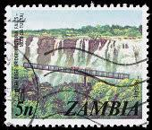 |
| Zambia 🇿🇲 1975. Local scenes and animals definitives. | 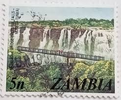 | |
| Rhodesian Study Circle | Regions - Rhodesian Study Circle | 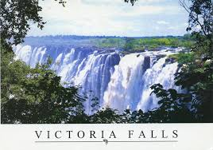 |
| Still have this, produced by Mardon Printers, Byo. 14/10/68. Souvenir Menu from Victoria Falls Hotel. | 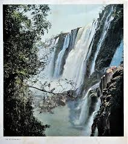 | |
| Wikipedia | जोग फल्स - Wikipedia | 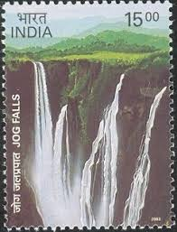 |
| eBay | Antique Stereoview Card Stereoscope Horseshoe Falls Goat Island Niagara NY 1896 | eBay | 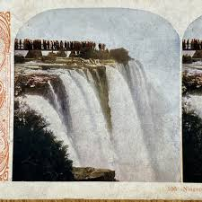 |
| Fine Art America | Brazil, Parana, Iguazu National Park, Cataratas Foz Do Iguacu #1 Art Print by Giordano Cipriani - Fine Art America | 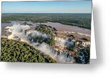 |
| Discover the awe-inspiring Victoria Falls, a must-see highlight of the area! Make The David Livingstone Safari Lodge and Spa your home away from home as you explore this wonder of the world | 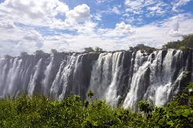 | |
| Iguazu Falls situated in the border of Brazil and Argentina | 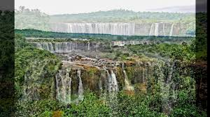 | |
| commonwealthstamps.com | Stamps of Zambia - Page 2 | 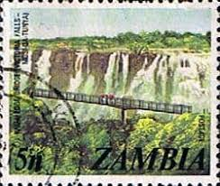 |
| Blogger.com | Postcard A La Carte: Zimbabwe - Victoria Falls Eastern Cataract | 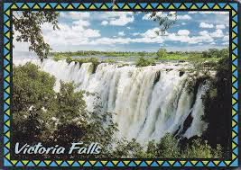 |
| Wikimedia.org | File:VictoriaFalls3.JPG - Wikimedia Commons | 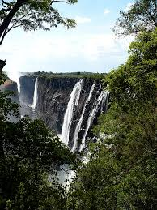 |
| Trip.com | Nehone Travel Guide 2026: Top Attractions, Things to Do & Deals | Trip.com | February 2026 | 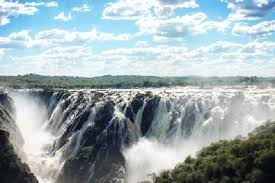 |
| Vecteezy | Water Falling Down a Terraced Canyon 11585161 Stock Photo at Vecteezy | 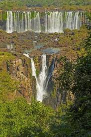 |
| wanderlustphotosblog.com | africa travel blog Archives - Wanderlust Travel & Photos | 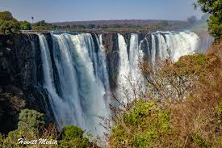 |
| youre-confirmed.com | Victoria Falls - You're Confirmed Travel | 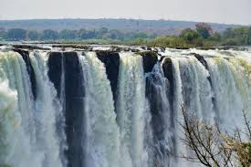 |
| New York Post | Tourists won't stop sitting on the edge of this terrifying waterfall | New York Post | 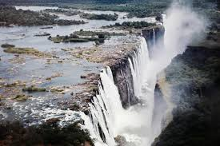 |
| The central part of the Victoria Falls. View from Zimbabwe. | 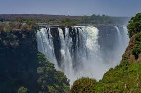 | |
| Pexels | Waterfalls Under Blue Cloudy Sky · Free Stock Photo | 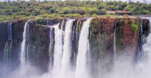 |
| Rhodesian Study Circle | Postcards: T D Ravenscroft – Camera Series I (Coloured) - Rhodesian Study Circle | 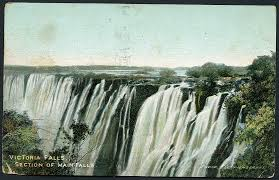 |
| Scrapbook Customs | Scrapbook Customs | Brazil Iguazu Falls Coordinates Paper | 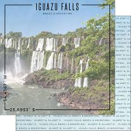 |
| Flickr | Cataratas del Iguazú | Flickr | 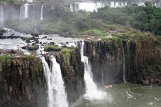 |
| The Victoria Falls are an absolute must on any itinerary through Southern Africa. Photos can't capture the sheer size and mind-blowing beauty of this magnificent natural occurrence. | 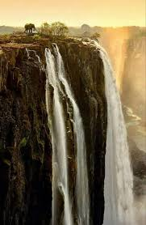 | |
| Amazon.in | India 2003 Jog Falls Traffic Lights Block of 4 Stamps MNH : Amazon.in: Toys & Games | 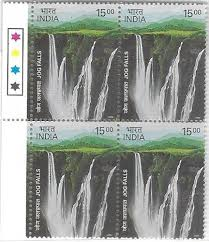 |
| Rhodesian Study Circle | May, 2017 - Rhodesian Study Circle | 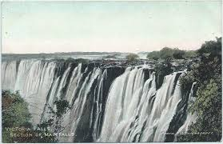 |
| Water Power I, II, III Acrylic Artwork | 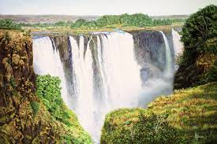 | |
| 8 Harare Zimbabwe ideas | victoria falls, zimbabwe, victoria falls zimbabwe | 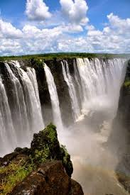 | |
| Medium | Jewel Allen – Medium | 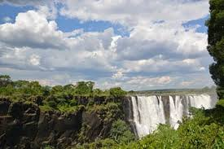 |
| Royal Travel & Tours Ltd (@royaltravel96) • Facebook | 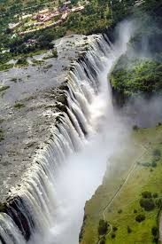 | |
| Heart of Africa Expedition | Lusaka, Livingstone and other Zambia cities - Heart Of Africa Expedition | 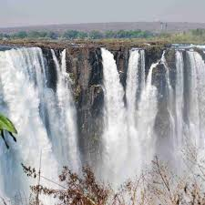 |
| eBay | BR100739 the victoria falls hotel zambia africa eastern cataract | eBay | 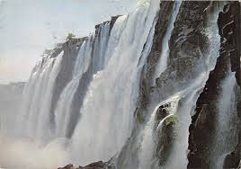 |
| Explore Namibia | How much does it cost to travel to Namibia? 4x4 Self-Drive Rates | 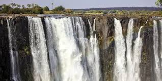 |
| Shutterstock | Incredible Iguazu Water Falls Argentina Side Stock Photo 2611653531 | Shutterstock | 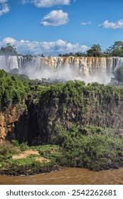 |
| Tripadvisor | Zumbezi Sun territory - Picture of Avani Victoria Falls Resort, Livingstone - Tripadvisor | 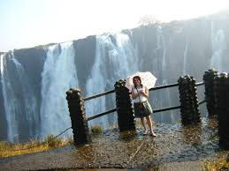 |
| Amazon.com | Amazon.com: Zambia Blue Sky Canvas Wall Art Artwork Wooden Frame Painting Victoria Falls On Zambezi River Border Of Zambia Modern Artwork Framed Ready To Hang For Bedroom Living Room Home Office Decor | 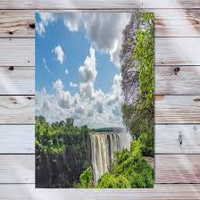 |
| photoanb.com | photo > benjamin > Cataract Island | 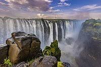 |
| Shutterstock | Victoria Falls Taken Zimbabwe Side Overlooking Stock Photo 1060625279 | Shutterstock | 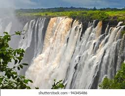 |
| Rhodesian Study Circle | Postcards: Tucks – Oilette Series A - Rhodesian Study Circle | 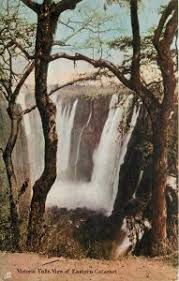 |
| Rhodesian Study Circle | South Africa - Rhodesian Study Circle | 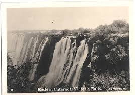 |
| Luan Baruti (@luanbaruti) • Instagram photos and videos | 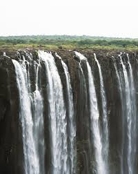 | |
| iStock | Zimbabwe Victoria Falls Stock Photo - Download Image Now - Africa, Arid Climate, Horizontal - iStock | 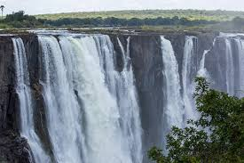 |
| AbeBooks | Pictorial Rhodesia - AbeBooks | 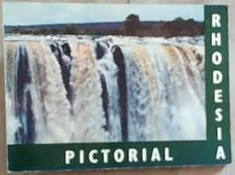 |
| Shobhaphila | Miniature/Souvenir Sheet Stamp (Single) - Shobhaphila | Stamp Collection | 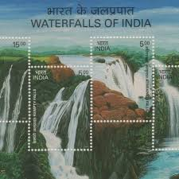 |
| Getty Images | 24 Knife Edge Bridge Stock Photos, High-Res Pictures, and Images - Getty Images | 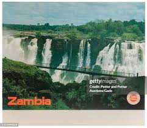 |
| Weebly.com | Other Cities - Aurel's Travel Website | 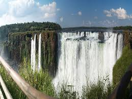 |
| Wikimedia.org | File:Victoria Falls The Rainbow Fall from Livingstone Island, asset C1gUKaQLVGiUxTegXveabo2u.jpg - Wikimedia Commons | 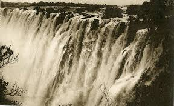 |
| Tripadvisor | Tour All Africa (Victoria Falls, Zimbabwe): Address, Phone Number - Tripadvisor | 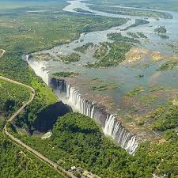 |
| Bharat Exotics | Permanent pictorial cancellations – Page 4 – Bharat Exotics | 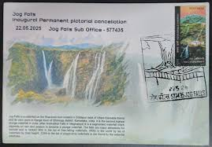 |
| Creative Fabrica | 18 Iguazu Falls Quote Designs & Graphics | |
| Postcard No: 181123 Evenin' @everyone! What a great week we had with two postcards making their way home! Really chuffed with all the great investigations so keep up the good work. Tonight's | ||
| I scanned this 1920's vintage Idaho postcard folder. Enjoy! | ||
| pixels.com | Iguassu Iguazu Falls Greeting Card by Ido Dromi | |
| Wilfred McCall (wjmva66) - Profile | Pinterest | ||
| Rhodesian Study Circle | Postcards: E Peters – Type IIIA – Victoria Falls B&W (150-199) - Rhodesian Study Circle | |
| Pngtree | Majestic Victoria Falls In Zimbabwe During Dry Summer Photo Background And Picture For Free Download - Pngtree | |
| Pelago | Mukuni Village and Victoria Falls Visit - All in One Experience ใน ลิฟวิ่งสโตน | Pelago | |
| eBay | 551012 Victoria Falls Zambia A4 Photo Print | eBay | |
| The eastern Cataract at the Victoria Falls #africansafari #victoriafallszimbabwe #victoriafalls | Eminent Africa Tours and Safaris | Facebook | ||
| Flickr | Victoria Falls | flowcomm | Flickr |
{kind=link}
{kind=link}